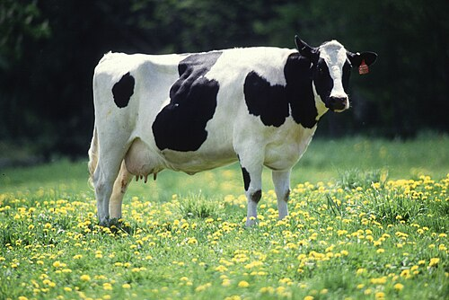

A vaca leiteira é um dos animais mais importantes para cooperativas agrícolas.Ela é criada principalmente para a produção de leite,que pode ser usado in natura ou transformado em queijo,manteiga e iogurte.
Uma vaca leiteira adulta pode produzir vários litros de leitepor dia.Ela precisa de boa alimentação,água limpa e cuidados veterinários regulares para manter e a produção.
Ficha produzida para a aula de programação web